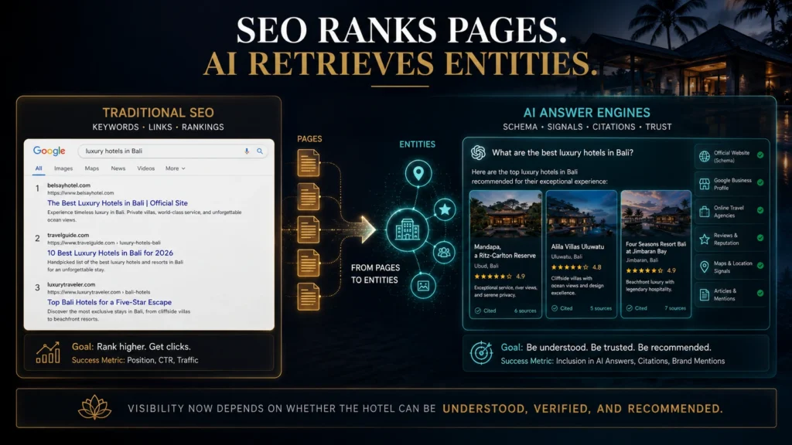
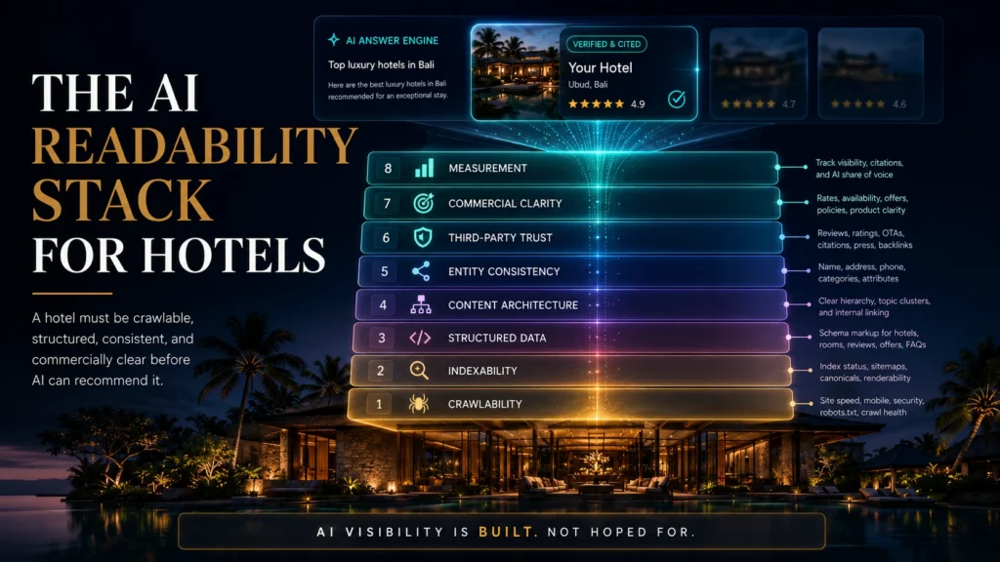
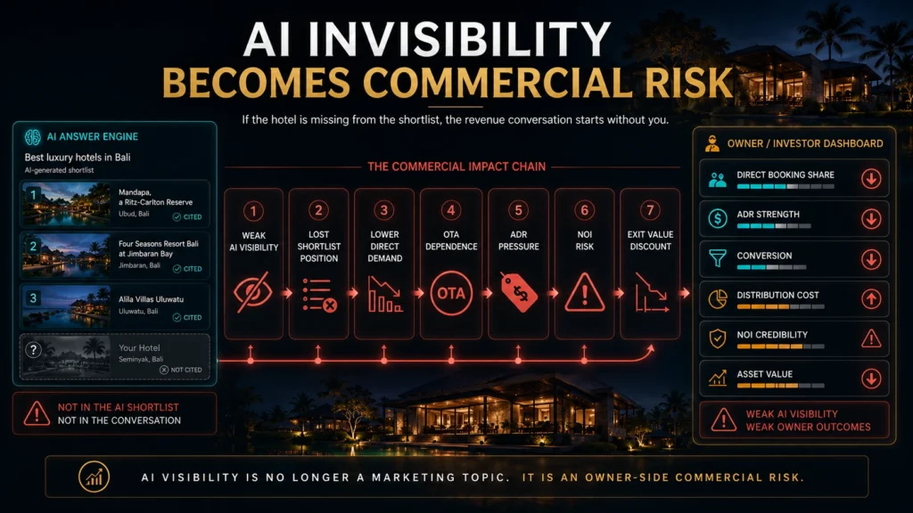

AI Optimization for Hotels in Bali: Why Your Property May Not Exist in the World That Matters
AI optimization for hotels helps Bali owners fix schema, content, crawler access, and AI visibility before direct bookings disappear.
Zenith Journal··16 min read·by Zenith Hospitality
AI optimization for hotels is now a commercial visibility issue, not a technical side topic. A Bali hotel can have a beautiful website, strong photography, good reviews, OTA listings, and a polished Instagram account - and still disappear from the travel-planning conversation that now matters. Not from human view. From AI visibility.
AI optimization for hotels has become critical for owners, developers, operators, and asset managers who depend on international demand, direct bookings, and premium positioning.
Luxury travelers no longer only search “best hotel in Bali” and scroll through ten blue links. Increasingly, they ask ChatGPT, Gemini, Perplexity, Copilot, or another AI assistant to recommend where to stay, compare options, build an itinerary, explain the best area, or shortlist hotels for a specific travel purpose.
If AI systems cannot read, verify, and cite your property clearly, the hotel may not rank lower. It may not appear at all.
This is not classic SEO. It is a digital infrastructure question.
Key Takeaways
AI optimization for hotels is not about keyword stuffing. It is about making the property machine-readable, entity-clear, and commercially understandable.
Traditional SEO does not automatically transfer into AI answer visibility because AI systems synthesize answers from multiple structured and semi-structured sources.
For Bali hotels, the risk is commercial: if AI systems do not understand your rooms, location, amenities, wellness offer, dining, policies, and direct-booking logic, they may recommend competitors instead.
Schema markup matters. However, it is only one layer. The stronger system includes crawlability, structured data, content architecture, local profiles, third-party listings, reviews, and prompt benchmarking.
Owners should treat AI readability as a pre-opening, website rebuild, and direct-booking control - not as a small SEO add-on after launch.
Why AI Optimization for Hotels Matters Now
AI-assisted travel planning has moved from novelty to behaviour.
Klook’s Travel Pulse 2026 reports that global travellers now use AI for trip-related tasks such as research, translation, itinerary organization, and budget management. In addition, Simon-Kucher’s Travel Trends 2026 shows that Gen Z and Millennial travellers use AI tools for travel inspiration and itinerary planning at materially higher rates than older segments.
This matters for Bali because the island is an international hospitality market. Its demand does not come from one local source. Instead, Bali depends on Australia, India, China, Europe, the United States, Southeast Asia, and other long-haul and regional markets. BPS Bali reported 472,070 direct foreign tourist visits in March 2026, with Australian tourists accounting for 25.37% of foreign arrivals that month.
For a Bali hotel owner, the practical question is no longer only:
“Does my hotel rank on Google?”
The better question is:
“When a qualified traveller asks an AI assistant where to stay in Bali, does my hotel exist in the answer?”
That is why AI optimization for hotels should now sit inside the owner’s commercial visibility agenda, not only inside the marketing department.
The Core Problem
Most hotel websites were designed for human browsing, brand presentation, and traditional SEO. They do not usually function as structured commercial data systems.
A typical hotel site may show rooms, images, amenities, restaurant content, spa menus, location copy, and booking links. However, to an AI system, the page may still look ambiguous when the underlying structure is weak.
Usually, AI crawlers can access the website. The larger problem is comprehension. The system must understand what the hotel is, who it is for, what it offers, where it sits, which rooms exist, which amenities are real, which claims carry proof, and why the property deserves a recommendation for a specific traveller need.
That is a dangerous gap.
In classic SEO, weak optimization may push a hotel from page one to page three. By contrast, weak structure in AI answer engines can remove the property from the shortlist entirely.
For this reason, AI optimization for hotels must start with structured commercial clarity, not only metadata and blog content.
What Most Owners and Operators Get Wrong
Most owners still treat AI visibility as a marketing problem. That is too narrow.
The real issue is not only whether the website has blog articles, keywords, or metadata. Instead, the question is whether the property has a clean digital operating model that connects the guest promise, room inventory, amenity logic, location positioning, commercial offers, and third-party trust signals.
This is the same reason a strong hotel feasibility study in Bali cannot stop at market size and projected ADR. The product, operating model, guest logic, and commercial infrastructure must work together.
As a result, AI answer engines expose weak structure faster. When a hotel’s identity is vague, its room logic is unclear, its amenities sound generic, and its third-party profiles contradict each other, AI systems may prefer a competitor with cleaner information.
Why Traditional SEO Is Not Enough
Traditional SEO was built around ranking pages. AI answer engines, however, resolve answers.
A search engine may return a list of pages. An AI assistant usually returns a synthesized recommendation. That recommendation may pull from the hotel website, Google Business Profile, Bing Places, OTAs, review platforms, articles, local guides, structured data, and previous indexed content.
This creates a different visibility model.
Traditional SEO
AI Answer Engine Optimization
Optimizes pages for rankings
Optimizes entities for retrieval and citation
Focuses on keywords and backlinks
Focuses on clarity, structure, evidence, and consistency
Rewards strong pages
Rewards answer-ready information
Measures clicks and positions
Measures citations, mentions, prompt visibility, and qualified referral traffic
Works mostly page-by-page
Requires ecosystem consistency across website, listings, reviews, and third-party sources
Google’s guidance for AI features in Search states that AI Overviews and AI Mode do not require special AI markup beyond normal Search eligibility. That point is important. There is no magic “AI schema” that guarantees inclusion.
However, this does not make structure irrelevant. It makes the fundamentals more important: indexability, crawlability, helpful content, correct structured data, visible information, internal links, entity clarity, and current data.
In practical terms, AI optimization for hotels extends traditional SEO. It does not replace it.

Why Bali Hotels Become Invisible to AI
Bali hotels typically become weak AI candidates for five reasons.
1. The hotel uses weak or incorrect markup
Many hotel websites use generic Organization or LocalBusiness markup. However, they often fail to express the property as a hotel, lodging business, resort, room inventory, or offer structure. This weakens machine understanding.
For hotels, this matters because the property is not just a brand. It is a lodging entity with rooms, rates, amenities, services, location, policies, and bookable offers.
Schema.org’s hotel markup guidance explains that hotel room offers require specific entity patterns because a hotel room does not behave like a normal product. This technical distinction matters commercially because rooms are the hotel’s core inventory.
2. Room types do not function as commercial inventory
A room page is not only a design showcase. It is a product unit.
AI systems need to understand the difference between a suite, villa, residence, wellness room, family room, pool villa, or branded residence unit. They also need occupancy, bedding, inclusions, meal plans, cancellation logic, check-in terms, and availability logic where relevant.
When a hotel describes every room only with emotional copy, the result creates a gap. The hotel may look beautiful to a human and vague to a machine.
This is also why hotel Product DNA matters before design, branding, or website copy. If the hotel itself lacks definition, the digital layer cannot express it properly.
3. Amenities read like marketing claims, not retrievable attributes
Many Bali hotels write broad phrases such as “wellness sanctuary,” “immersive lifestyle experience,” “luxury escape,” or “authentic Balinese retreat.”
These phrases may sound premium. However, they do not help AI answer precise questions such as:
Canggu hotels with proper recovery facilities
Ubud retreats with daily yoga and plant-based dining
Bali resorts suitable for a family with two children
Seminyak hotels with strong walkability and direct beach access
Boutique hotels with private pool villas under a specific budget
In practice, AI retrieval works better when amenities, room attributes, location logic, and guest-fit information are explicit.
4. Third-party profiles contradict the website
AI systems do not only read the hotel’s website. They compare signals.
If Google Business Profile, Booking.com, Tripadvisor, Apple Maps, Bing Places, social profiles, and the hotel website use different names, descriptions, categories, coordinates, phone numbers, amenities, or images, the property becomes harder to trust.
For a human, these inconsistencies may look minor. For AI systems, they create entity confusion.
The same issue appears in brand strategy. A property can look visually premium but still lack a true Bali boutique hotel brand architecture. AI systems will not fix weak positioning. Instead, they may simply ignore it.
5. The content does not answer real planning questions
AI travel planning is question-led.
Travellers do not only ask for “best hotels.” They ask for specific fit:
a luxury boutique hotel in Ubud for wellness
a Bali resort for a first-time couple
a quiet Canggu hotel away from nightlife
a Bali hotel with recovery, sauna, cold plunge, and healthy food
a family-friendly private pool villa near the beach
the best area in Bali for a five-night itinerary
If the hotel website does not answer these questions in clear, structured, factual language, AI systems may use other sources that do.
The Zenith View
AI optimization for hotels is not an SEO campaign. It is a commercial visibility system.
At Zenith, we would not start with “How do we rank this page?” We would start with:
“What does the hotel need AI systems to understand, verify, and recommend?”
That is an owner-side question.
For a hotel, the AI-readable layer must connect to the operating reality of the asset:
Product DNA: who the hotel is for and why it exists
Room logic: what guests can actually book
Guest journey: what the guest experiences before, during, and after the stay
Amenity inventory: what exists and how the hotel should describe it
Commercial model: direct booking, packages, upsells, wellness, F&B, and events
Local positioning: area, access, demand drivers, and nearby attractions
Reputation signals: reviews, awards, press, and partner references
Technical foundation: schema, crawlability, indexing, business profiles, and internal links
A generic SEO agency may optimize copy. A hotel operator must make the property understandable as a functioning commercial asset.
That is the difference.
Framework: The AI Readability Stack for Hotels
Owners should think in layers.
Layer
What It Means
Owner-Side Risk If Weak
Crawlability
AI/search crawlers can access the content
The property may lose retrieval eligibility
Indexability
Pages can appear in search systems
Important pages may never enter the discovery set
Structured data
Hotel, rooms, offers, article, local business, and organization data are correctly marked up
AI may misclassify or ignore the property
Content architecture
Pages answer real guest, investor, and planning questions
AI may use competitors or OTAs as better sources
Entity consistency
Name, address, coordinates, categories, and descriptions match across platforms
Entity confusion can weaken trust
Third-party trust
Reviews, OTAs, media, maps, and listings reinforce the same story
AI cannot corroborate the hotel’s claims
Commercial clarity
Direct-booking, packages, room offers, and value proposition are clear
The hotel may miss qualified direct demand
Measurement
AI citations, referral traffic, prompt results, and conversions are tracked
The owner cannot see whether visibility creates business value
Therefore, AI optimization for hotels should happen before a website rebuild, pre-opening launch, rebrand, or direct-booking campaign.

Operational Implications
AI visibility depends on operational truth.
A hotel cannot sustainably mark up amenities, room types, packages, or service promises that operations cannot deliver. For example, if the site says “wellness retreat,” the operating model must support that claim through treatment spaces, therapists, recovery facilities, programming, opening hours, guest flow, pricing, and claims discipline.
If the site says “family-friendly,” the room mix, bedding logic, safety features, F&B, transfers, activities, and service training must support that claim.
If the site says “luxury boutique,” the experience must justify the rate.
This is where hotel AI visibility becomes operator work, not only technical work. In other words, the data layer must match the product layer.
The same principle applies to compliance and asset credibility. In Bali, weak operating structure can quickly become a commercial risk, similar to the issues discussed in short-term rental compliance and asset risk in Bali.
Commercial Implications
The commercial risk is not theoretical.
AI answer engines increasingly influence the inspiration and shortlisting phase. That is where travellers decide which properties deserve attention before they compare rates. Consequently, a hotel missing from that stage may not get the chance to compete on brand, service, or price.
For owners, the risk appears in several places:
Commercial Area
Risk
Direct booking
AI systems may route demand to better-structured competitors or OTAs
ADR
Weak product clarity makes premium rate justification harder
Conversion
Unclear room, amenity, and package information creates friction
Distribution cost
More dependence on OTAs if direct visibility is weak
Pre-opening
New hotels may launch without enough visibility in AI planning tools
Rebrand
New identity may fail to consolidate across search and AI systems
Exit value
Weak digital infrastructure reduces the credibility of future demand claims
The owner-side question is simple:
If AI systems are becoming a planning layer, can your hotel be understood as a high-value answer?

What To Do Before Committing Capital
Before spending on a new website, SEO retainer, direct-booking campaign, or rebrand, hotel owners should complete an AI readability audit.
This audit should be part of AI optimization for hotels because technical fixes alone do not solve weak product clarity, weak entity consistency, or weak commercial positioning.
1. Check crawler access
Review robots.txt and CDN/firewall settings. Search-relevant crawlers need access unless the owner has made a deliberate governance decision. These crawlers may include Googlebot, Bingbot, OAI-SearchBot, PerplexityBot, and relevant user-triggered retrieval crawlers.
However, training crawlers require a separate decision. Search visibility and model training are not the same issue.
2. Validate structured data
Use Google’s Rich Results Test and schema validation tools. Confirm that the hotel appears not only as a generic organization but also through the correct hotel, lodging, local business, room, offer, article, breadcrumb, and organization structures where relevant.
3. Build a machine-readable attribute inventory
Create a structured inventory of:
room types
room sizes
occupancy
bedding
views
private pools
wellness facilities
F&B outlets
transfer logic
event spaces
family features
accessibility notes
policies
packages
area/location attributes
This inventory then becomes the source of truth for website copy, schema, OTAs, Google Business Profile, sales material, and AI-facing content.
4. Align third-party profiles
Update Google Business Profile, Bing Places, Apple Business Connect, OTAs, Tripadvisor, social profiles, and key local directories. The hotel’s name, address, phone number, coordinates, category, description, images, and amenities must align.
Otherwise, AI systems may see multiple versions of the same property and reduce confidence.
5. Create answer-first content
Build pages and sections that answer real planning questions:
the hotel’s strongest position in Bali
the guest types the hotel fits best
the room type different guests should choose
the inclusions attached to the rate
the wellness, dining, and local experiences available
the hotel’s comparison by area, guest type, and stay purpose
This approach helps AI systems retrieve specific answers instead of guessing from generic brand language.
6. Benchmark prompts monthly
Run controlled prompts in ChatGPT, Gemini, Perplexity, Copilot, and Google AI search experiences. Track whether the hotel appears, what the answer says, which sources the system cites, whether the facts are correct, and which competitors appear instead.
Over time, this creates a practical AI visibility benchmark rather than a theoretical SEO report.
FAQ
What is AI optimization for hotels?
AI optimization for hotels is the process of making a hotel easier for AI answer engines to find, understand, verify, and recommend. It includes crawlability, structured data, room and amenity clarity, content architecture, business-profile consistency, third-party signals, and measurement. It is not only SEO, and one plugin will not solve it.
Is hotel SEO still important?
Yes. Google states that the same foundational SEO best practices remain relevant for AI features. Pages still need crawlability, indexability, useful content, and snippet eligibility. However, AI systems may synthesize answers using multiple sources. Therefore, ranking alone is not enough. The hotel must also function as a clear and credible entity.
Does schema markup guarantee AI visibility?
No. Schema markup does not guarantee visibility in AI Overviews, ChatGPT, Perplexity, Gemini, or Copilot. It helps machines understand the content more accurately. However, hotels still need visible content, correct indexing, useful pages, consistent third-party profiles, reputation signals, and strong commercial clarity.
What schema does a hotel website need?
A hotel website usually needs a clean combination of Organization, Hotel or LodgingBusiness, LocalBusiness where relevant, HotelRoom or room-related entities, Offer, BreadcrumbList, Article or BlogPosting for editorial content, and possibly Event for retreats or special programming. The correct structure depends on the actual website and the information visible on each page.
Should Bali hotels allow AI crawlers?
For discovery, hotels should usually allow search-relevant crawlers such as Googlebot, Bingbot, OAI-SearchBot, PerplexityBot, and relevant user-triggered retrieval crawlers. However, training crawlers require a separate strategic decision. Owners should avoid accidentally blocking useful search and retrieval crawlers while trying to control model training.
How can a hotel measure AI visibility?
A hotel should track AI visibility through controlled prompt benchmarks, Bing AI Performance where available, referral traffic from AI platforms, cited pages, grounding queries, Search Console performance, direct-booking assisted conversions, and changes in brand-query demand. The goal is not vanity visibility. The goal is qualified commercial visibility.
Why is this especially important for Bali hotels?
Bali is a highly competitive international hotel market. Many properties compete for the same luxury, lifestyle, wellness, family, and long-stay demand. As AI systems enter the shortlisting process, hotels with clearer structured data, stronger third-party consistency, and more answer-ready content may appear before visually beautiful but poorly structured competitors.
Summary Takeaways
AI answer engines are becoming part of hotel discovery. They do not replace Google, OTAs, travel agents, or social media. However, they increasingly influence the research stage where travellers shortlist destinations, areas, and properties.
For Bali hotels, the risk is not only digital. It is commercial.
If AI systems cannot read, structure, verify, and cite your property, the hotel may leave the conversation before the booking journey begins.
Therefore, AI optimization for hotels should become owner-side infrastructure, not a small technical add-on.
Owners should not wait until traffic drops or competitors appear in AI recommendations. Instead, they should audit AI readability before website rebuilds, pre-opening campaigns, rebrands, operator transitions, and direct-booking investments.
CTA
Zenith Hospitality Global helps hotel owners, developers, and operators audit and rebuild the digital infrastructure behind AI visibility.
If you are planning a new hotel, relaunching a Bali property, rebuilding your website, or trying to reduce OTA dependence, request a Zenith AI Readability & Commercial Visibility Audit.
The audit reviews crawlability, schema, hotel entity structure, room and amenity architecture, Google/Bing/Apple profile consistency, third-party signals, AI prompt visibility, and direct-booking commercial implications.
Before you spend more on traffic, make sure AI systems can understand that your hotel exists.